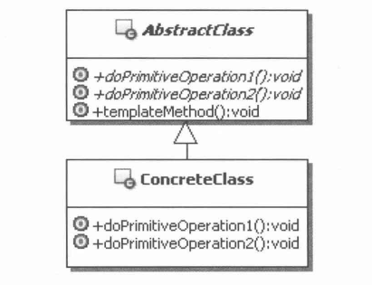

Java设计模式-模板方法模式
什么是模板方法模式
模板方法模式：定义一个操作中的算法的骨架，而将一些步骤延迟到子类中。模板方法使得子类可以不改变一个算法的结构即可重定义该算法的某些特定步骤。
模板方法模式主要是通过制定模板，把算法步骤固定下来，至于谁来实现，模板可以自己提供实现，也可以由子类去实现，还可以通过回调机制让其他类来实现。
通过固定算法骨架来约束子类的行为，并在特定的扩展点来让子类进行功能扩展，从而让程序既有很好的复用性，又有较好的扩展性。
优点
- 【代码复用】模板方法模式是一种实现代码复用的很好的手段。通过把子类的公共功能提炼和抽取，把公共部分放到模板中去实现。
缺点
- 【算法骨架不容易升级】模板方法模式最基本的功能就是通过模板的制定，把算法骨架完全固定下来。事实上模板和子类是非常耦合的，如果要对模板中的算法骨架进行变更，可能就会要求所有相关的子类进行相应的变化。所以抽取算法骨架的时候要特别小心，尽量确保是不会变化的部分才放到模板中。
图解

- AbstractClass：抽象类。用来定义算法骨架和原语操作，具体的子类通过重定义这些原语操作来实现一个算法的各个步骤。在这个类里面，还可以提供算法中通用的实现。
- ConcreteClass：具体实现类用来实现算法骨架中的某些步骤，完成与特定子类相关的功能。
何时使用
建议在如下情况时选用模板方法模式
需要固定定义算法骨架，实现一个算法的不变的部分，并把可变的行为留给子类来实现的情况。
各个子类中具有公共行为，应该抽取出来，集中在一个公共类中去实现，从而避免代码重复。
需要控制子类扩展的情况。模板方法模式会在特定的点来调用子类的方法，这样只允许在这些点进行扩展。
具体实现
以下以模板方法式回调作为示例
登录信息
import lombok.Data;
/**
* @Author: Sam
* @Date: 2022-09-23 15:42
* @Description: 封装登录信息
*/
@Data
public class LoginModel {
/**
* 登录人员编号
*/
private String loginId;
/**
* 登录密码
*/
private String pwd;
}
登录控制的模板方法需要的回调接口
/**
* @Author: Sam
* @Date: 2022-09-22 17:14
* @Description: 登录控制的模板方法需要的回调接口
*/
public interface LoginCallBack {
/**
* 根据登录编号来查找和获取存储相应的数据
*
* @param loginId 登录编号
* @return 登录编号相对应的数据
*/
LoginModel findLoginUser(String loginId);
/**
* 对密码数据进行加密
*
* @param pwd 密码
* @param template LoginTemplate对象
* @return 加密后的密码数据
*/
String encryptPwd(String pwd, LoginTemplate template);
/**
* 判断用户填写的登录数据和db的是否一致
*
* @param lm 用户登录数据
* @param dbLm 数据库用户数据
* @param template LoginTemplate对象
* @return 匹配是否成功，true/false
*/
boolean match(LoginModel lm, LoginModel dbLm, LoginTemplate template);
}登录控制的模板
/**
* @Author: Sam
* @Date: 2022-09-23 15:44
* @Description: 登录控制的模板
*/
public class LoginTemplate {
public final boolean login(LoginModel lm, LoginCallBack callBack) {
//1.根据登录人员的编号获取相对应的数据
LoginModel dbLm = callBack.findLoginUser(lm.getLoginId());
if (dbLm != null) {
//2.对密码加密
String encryptPwd = callBack.encryptPwd(lm.getPwd(), this);
//把加密后的密码设置回登录模型中
lm.setPwd(encryptPwd);
//判断是否匹配
return callBack.match(lm, dbLm, this);
}
return false;
}
/**
* 对密码数据进行加密
*
* @param pwd 密码
* @return 加密后端密码数据
*/
public String encryptPwd(String pwd) {
return pwd;
}
public boolean match(LoginModel lm, LoginModel dbLm) {
if (lm.getLoginId().equals(dbLm.getLoginId()) && lm.getPwd().equals(dbLm.getPwd())) {
return true;
}
return false;
}
}客户端调用类
/**
* @Author: Sam
* @Date: 2022-09-23 15:56
* @Description: 模板式回调客户端
*/
public class Client {
public static void main(String[] args) {
//登录人信息
LoginModel lm = new LoginModel();
lm.setLoginId("admin");
lm.setPwd("123456");
//登录模板用户判读对象
LoginTemplate lt = new LoginTemplate();
//定义好模板规范，使用即实现，有高可扩展性
boolean checkLogin = lt.login(lm, new LoginCallBack() {
@Override
public LoginModel findLoginUser(String loginId) {
//此处模拟查数据库的操作
LoginModel dbLm = new LoginModel();
dbLm.setLoginId(loginId);
dbLm.setPwd("123456");
return dbLm;
}
@Override
public String encryptPwd(String pwd, LoginTemplate template) {
//可不覆盖，直接调用模板中的默认实现
return template.encryptPwd(pwd);
}
@Override
public boolean match(LoginModel lm, LoginModel dbLm, LoginTemplate template) {
//可不覆盖，直接调用模板中的默认实现
return template.match(lm, dbLm);
}
});
System.out.println("登录是否成功 = " + checkLogin);
}
}结果
登录是否成功 = true总结
以上就是模板方法模式介绍和示例了~